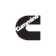
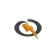
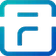
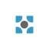
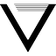
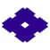
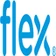

Hele det spanske og portugisiske fastland mistede strømmen på én gang. Den værste strømafbrydelse i Europa i over 20 år, skriver de europæiske elnetoperatørers organisation, ENTSO-E.
Uden strøm regner ingen server – heller ikke dem, der kører AI. Følg kablet fra brændslet til stikket, og se hvor fondens 69 energiselskaber sidder undervejs.
Hvert tal handler om et led i samme kæde: strømmen skal skaffes, laves, flyttes, gemmes og leveres. NewDeal Invest ejer selskaber i alle fem led. Hos 9 af de 69 nævner fondens klassifikation datacentre direkte. Du kan genkende dem på ⚡ undervejs.
Brændsel
Produktion
Elnet
Lagring
Forsyning
Datacenter
Hvor meget af fonden?
Derfor ligger der kraftværker i en teknologifond.
NewDeal Invest deler fonden op i 12 linjer. Energi og elnet er den næststørste: 16,96 % af PMINDI pr. 16.10.2026. Kun chips og halvledere vejer mere.
Chips og halvledere24,31 %
Energi og elnet16,96 %
Datacentre, netværk og cloud12,59 %
Digitale platforme10,56 %
Robotik og AI i den fysiske verden7,23 %
Råstoffer og materialer6,69 %
Space5,99 %
Fintech og betalinger5,22 %
Krypto4,07 %
AI- og forretningssoftware2,35 %
Sundhed og biotek1,77 %
Kvante1,57 %
16.960 kr.af hver 100.000 kr. i PMINDI lå i energiselskaber
69selskaber deler de 16,96 %
0,87 %er den største enkeltvægt i energi (Babcock & Wilcox). De ti største fylder tilsammen 6,01 %.
Vægte i PMINDI (udloddende klasse) pr. 16.10.2026. Hvert selskab tæller kun i sin primære linje. Kontanter og enkelte uklassificerede positioner er ikke med.
Stop 1 · Brændsel
Først skal der være noget at brænde – eller spalte.
Gas skal hentes op og sendes gennem rør. Uran skal beriges, før det kan bruges i en reaktor. Her begynder kæden.
ASP IsotopesIsotopberigelse til kernekraft og medicin.
Kinder MorganGasrørledninger.
Vista EnergyOlie og gas i Argentina.
Centrus EnergyUranberigelse og HALEU.
EQTNaturgasproducent.
Atlas Energy SolutionsFrac-sand og strøm.
Range ResourcesNaturgasproducent.
Canadian Natural ResourcesOlie og gas.
Stop 2 · Produktion
Så skal strømmen laves. Tre veje fører frem.
Turbiner og brændselsceller, kernekraft og sol. Det største stop på rejsen: 30 selskaber og 7,45 % af fonden (3,12 + 0,91 + 3,42).
Gas, turbiner og brændselsceller
13 selskaber3,12 %
FL
PP
FL

Se selskaberne
Babcock & WilcoxKedler og kraftværksteknologi, også til strøm til datacentre.
Power Solutions InternationalMotorer og strømsystemer, bl.a. til datacentre.
Ballard Power SystemsBrændselsceller med brint.
ErockGasbaseret lokal strøm til datacentre.
Rolls-RoyceFlymotorer, strømsystemer og SMR.
Bloom EnergyBrændselsceller til datacentre.
GE VernovaGasturbiner, vind og elnet.
FLFluorIngeniør og byggeri, ejer i NuScale.
PPPlug PowerBrint og elektrolyse.
FLFlowservePumper, ventiler.
Solaris Energy InfrastructureMobil strøm til datacentre.
CaterpillarMaskiner og gasgeneratorer.
CumminsMotorer og generatorer.
Kernekraft og små reaktorer
8 selskaber0,91 %
BT
Se selskaberne
BTBWX TechnologiesKernekraftkomponenter og brændsel.
OkloSmå reaktorer til datacentre.
Nano Nuclear EnergyMikroreaktorer.
Mirion TechnologiesStrålingsmåling.
NuScale PowerSMR.
LightbridgeKernebrændsel.
Terra InnovatumMikroreaktorer.
Terrestrial EnergySmeltesaltreaktorer.
Sol
9 selskaber3,42 %
FS
Se selskaberne
T1 EnergyProduktion af solcellemoduler i USA.
SolarEdgeInvertere og strømoptimering til solceller.
Enphase EnergyMikroinvertere og batterier til solceller.
FSFirst SolarTyndfilms-solcellemoduler.
SunrunSolceller og batterier til boliger.
Tigo EnergySikkerhed og optimering til solceller.
NextrackerSolcelle-trackere.
Canadian SolarSolcellemoduler og batterilagring.
Array TechnologiesSolcelle-trackere.
Nyt fra selskaberne ved dette stop
· Babcock & Wilcox
1,2 GW gaskraft til AI-datacentre
Selskabet har fået endeligt klarsignal til et projekt til 2,4 mia. dollar: fire gasfyrede kedler med dampturbiner, der skal levere strøm til Applied Digitals AI-datacentre.
Rolls-Royce SMR er valgt af Videberg Kraft til at levere tre små modulære reaktorer. Det bliver Sveriges første nye kernekraftværk i over 40 år, oplyser selskabet.
Selskabernes egne meddelelser, gengivet kort. De er ikke en vurdering af selskaberne.
Stop 3 · Elnet
Så skal den flyttes.
Strøm er kun nyttig, når den når frem. Master, kabler og stationer skal bygges og holdes kørende – fra solparken til byen.
7 selskaber1,32 % af PMINDI

IT
PS
Se de 7 selskaber og hvad de laver
MYR GroupEntreprenør for transmission og eldistribution.
Shoals TechnologiesElektriske systemer til solparker.
Quanta ServicesNetbygning og strøm til datacentre.
ITITTPumper og komponenter.
PSPrimoris ServicesInfrastrukturentreprenør.
Tantalus SystemsSmart grid.
TerexMaskiner, forsyningsbiler.
Stop 4 · Lagring og reservestrøm
Så skal den gemmes til senere.
Solen følger døgnet, forbruget følger os. Batterier og generatorer bygger bro, når de to ikke passer sammen.
11 selskaber3,28 % af PMINDI


MI

Se de 11 selskaber og hvad de laver
EnovixSilicium-anode lithium-ion-batterier.
Fluence EnergyBatterilagring til elnettet.
GeneracGeneratorer og reservestrøm, også til datacentre.
SES AILithium-metal-batterier og AI til materialeforskning.
QuantumScapeSolid-state-batterier til elbiler.
Solid PowerSolid-state-elektrolytter til batterier.
Amprius TechnologiesBatterier til droner og luftfart.
Eos EnergyZinkbatterier til nettet.
ElectrovayaBatterier til industri.
MIMicrovastBatterier.
NeoVoltaBoligbatterier.
Stop 5 · Forsyning
Til sidst bliver den leveret.
Elproducenter og forsyningsselskaber samler kæden og sælger strømmen videre – til boliger, fabrikker og datacentre.
9 selskaber1,80 % af PMINDI
NE
CE
AE
Se de 9 selskaber og hvad de laver
VistraElproducent med gas- og kernekraft.
NENextEra EnergyElforsyning og sol/vind.
Talen EnergyKernekraft og strøm til datacentre.
DTE EnergyForsyningsselskab.
CECMS EnergyForsyningsselskab.
AEAmerican Electric PowerForsyning og transmission.
FirstEnergyForsyning og transmission.
Southern CompanyForsyningsselskab.
Clearway EnergyVedvarende elproduktion.
Nyt fra selskaberne ved dette stop
· Vistra
Kernekraft på 20-årige aftaler til Meta
Vistra har indgået 20-årige elkøbsaftaler om mere end 2.600 MW fra tre kernekraftværker, som skal understøtte Metas aktiviteter i regionen. Leverancerne begynder ifølge selskabet sidst i 2026.
Her ender kablet. I 2024 brugte verdens datacentre omkring 415 TWh strøm (IEA). Herfra tager resten af fonden over: chips, datacentre og software.
Den dag manglede Spanien og Portugal ikke strøm. Balancen i nettet gik tabt. Strøm er en kæde, og den holder kun, når alle led holder. Det er hele den kæde, energitemaet handler om.
Hele kablet på én linje: 16,96 % af PMINDI.
Sådan fordeler energidelen af fonden sig på de fem stop. Produktion fylder mest. Tallene summer: 3,11 + 7,45 + 1,32 + 3,28 + 1,80 = 16,96.
Produktion7,45 % (gas 3,12 · kerne 0,91 · sol 3,42)
Elnet1,32 %
Lagring3,28 %
Forsyning1,80 %
Strømmen krydser andre temaer.
8 selskaber hører hjemme i et andet tema, men har også en fod i energi. De tæller med i deres hovedtema.
Se de 8 selskaber
TeslaElbiler, batterilagring og robot-/selvkørende AI.Hovedtema: Robotik og AI i den fysiske verden
IREN (Iris Energy)Bitcoin-miner der omstiller til AI-cloud på egen strøm.Hovedtema: Datacentre, netværk og cloud
EFEnergy FuelsUran og sjældne jordarter.Hovedtema: Råstoffer og materialer
FermiEnergi- og datacentercampus i Texas.Hovedtema: Datacentre, netværk og cloud

Sumitomo ElectricKabler, fiber og elnetkomponenter.Hovedtema: Datacentre, netværk og cloud
Jacobs SolutionsIngeniørdesign af infrastruktur og datacentre.Hovedtema: Datacentre, netværk og cloud
ShellySmart-home-relæer og IoT-enheder.Hovedtema: Robotik og AI i den fysiske verden

FlexKontraktproduktion og strøm/køling.Hovedtema: Datacentre, netværk og cloud
Kilder og metode
Beholdning og vægte: PMINDI’s positioner pr. 16.10.2026 (NewDeal Invest). Procenter er andele af hele PMINDI med to decimaler, så delene summer til helheden.
Linjer og stop: NewDeal Invests klassifikation af fondens selskaber pr. 16.10.2026. Beskrivelserne af selskaberne er klassifikationens korte begrundelser.
 Babcock & WilcoxKedler og kraftværksteknologi, også til strøm til datacentre.
Babcock & WilcoxKedler og kraftværksteknologi, også til strøm til datacentre. Power Solutions InternationalMotorer og strømsystemer, bl.a. til datacentre.
Power Solutions InternationalMotorer og strømsystemer, bl.a. til datacentre. Ballard Power SystemsBrændselsceller med brint.
Ballard Power SystemsBrændselsceller med brint. ErockGasbaseret lokal strøm til datacentre.
ErockGasbaseret lokal strøm til datacentre. Bloom EnergyBrændselsceller til datacentre.
Bloom EnergyBrændselsceller til datacentre. GE VernovaGasturbiner, vind og elnet.
GE VernovaGasturbiner, vind og elnet. Solaris Energy InfrastructureMobil strøm til datacentre.
Solaris Energy InfrastructureMobil strøm til datacentre. CaterpillarMaskiner og gasgeneratorer.
CaterpillarMaskiner og gasgeneratorer.